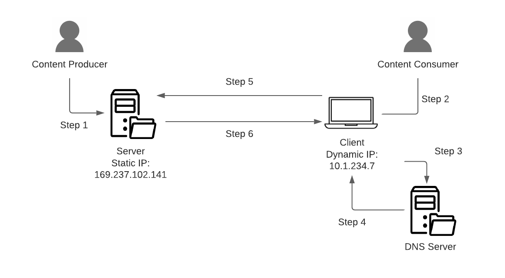

12 How the Web Works
The discipline of Data Science was, in a large part, ushered into being by the increasing availability of information avaialable on the World Wide Web or through other internet sources. Prior to the popularization of the internet as a publiching and comminications platform, the majority of scientific research involved controlled studies in which researchers would collect their own data through vearious direct means of data collection (surveys, medical testing, etc.) in order to test a stated hypothesis.
The vast amount of information available on the internet disrupted this centuries long dominance. Today, the dominant form of scientific research involves using data collected or produced by others for reasons having little or nothign to do with the research question being investigated by scholar. Users who post items about their favorite political condidate are not, for example, doing this so that scociologists can better under how politics function in America. However, their Tweets are being used in that and many other unforseen capacities.
Because the internet provides such a rich trove of information for study, understaning how to effectively get, process, and prepare information from the internet for scientific research is a crucial skill for any data scientist. And in order to understand these workflows, the data scientist must first understand how the internet itself functions.
12.1 Client-Server Architecture
The base archtecture and functioning of the internet is quite simple:
- A content produce puts information on a computer called the server for others to retrieve;
- A user uses their local computer, called the client, to request the information from the sever;
- The server delivers the information to the client.

Each of the above detailed steps is accomplished using a sometimes complex set of computer protocols. The deep, technical details of each step are beyond the scope of this course. We are here concerned with their conceptual acrchictecture.
12.1.1 Publishing Information on the Server
Anytime a computer connects to any network, that computer is assigned a unique identifier known as an Internet Protocol (IP) Address that uniquely identifies that computer on the network. IP Address appear in the form 000.000.000.000 Where “0” can be any integer. For example, 169.237.102.141 is the current IP Address of the computer that currently hosts the DataLab website. IP address are sometimes pre-designated for particular computers, known as a Static IP Address, and sometimes dynamically assigned from a range of available IP Address using software known as a Dynamic Host Configuration Protocol (DHCP) Server. Servers are typically assigned static IP addresses and clients are typically assigned dynamic IP addresses.

As humans, we are used to accessing websites via a domain name (which we’ll discuss shortly), but you also contant any server on the internet by simply typing the IP address into your browser address bar where you would normally enter the domain name. For exampe, you can simply click on 169.237.102.141 to access the datalab website.
Content Producers typically use specialized software that empoloys the Secure File Transfer Protocol (SFTP) to move move files from their local computer to the internet server. SFTP sofware creates a connection to the internet server via IP address or domain name using special login credentials that allows the user to drag and drop files onto the server.
12.1.2 IP Addresses vs. Domain Names
IP Addresses are the unique identifiers that make the internet work. How can this be, you might ask, since you’ve most likely never encountered one before? This is because the internet also utilizes as system known as Domain Name Registration, to translate nice, human readable domains into IP addressess. The Domain Registry System maintains a global list that associates human readable domain names with machine readable IP addresses. And a secondary set of of internet connected servers known as Domain Name Servers (DNS) provide a lookup service that translates domain names into IP addresses in the background. As the client user, you see only the domain. But the actual request process is looks like this:
- A content produce puts information on a computer called the server for others to retrieve;
- A user uses their local computer, called the client, to request the information from the sever using a domain name using request software such as a web browser;
- The user’s client sofware first sends a request to a DNS server to retrieve the IP address of the server on the network associated with the entered domain name;
- The DNS server returns the associted IP address to the client;
- The client then makes the information request to the server using its retreived IP address;
- The server delivers the information to the client.

12.1.3 Requesting Information from the Server
Clients can use a variety of methods to request information from the server. These include:
- A Web Browser
- Mobile Apps
- Use programming and shell environments such as R, Phython, or Bash to access human readable versions of data via URL or machine readable versions of data via an Application Programming Interface (API), discussed in detail below.
In all cases, spefific data requests are made using the Hyper Text Transfer Protocol (HTTP), which defines a set of rules